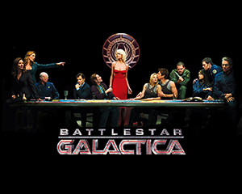
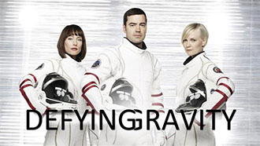
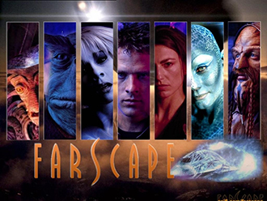
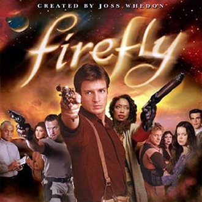
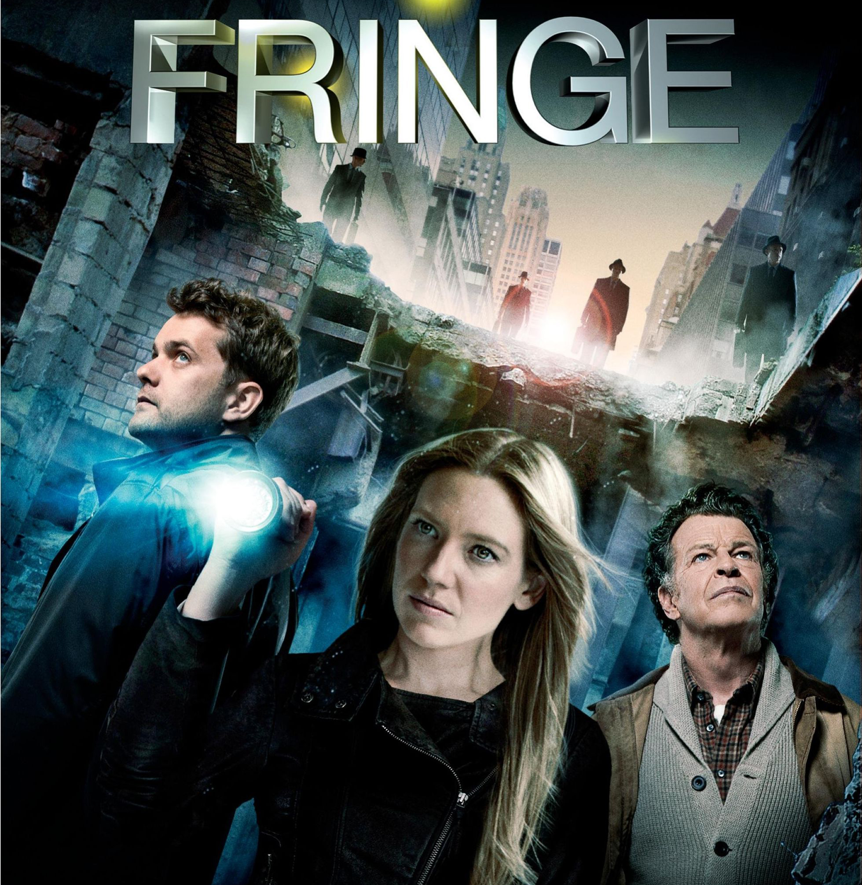
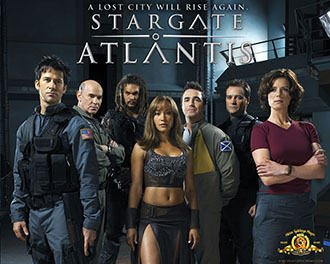
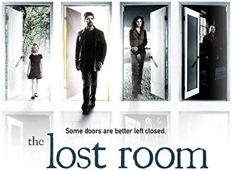
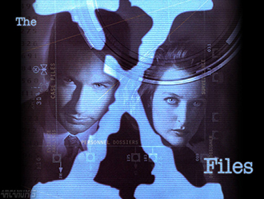

Battlestar Galactica
When an old enemy, the Cylons, resurfaces and obliterate the 12 colonies, the crew of the aged Galactica protects a small civilian fleet - the last of humanity - as they journey toward the fabled 13th colony of Earth.
Being Human

Three twenty-somethings share a house and try to live a normal life despite being a ghost, a werewolf, and a vampire.
Defying Gravity
Eight astronauts living aboard an international spacecraft on a mission through the Solar System, as the world watches from billions of kilometers away.
Farscape
Thrown into a distant part of the universe, an Earth astronaut finds himself part of a fugitive alien starship crew.
Firefly
Five hundred years in the future, a renegade crew aboard a small spacecraft tries to survive as they travel the unknown parts of the galaxy and evade warring factions as well as authority agents out to get them.
Fringe
A television drama centered around a female FBI agent who is forced to work with an institutionalized scientist in order to rationalize a brewing storm of unexplained phenomena.
Stargate Atlantis
An international team of scientists and military personnel discover a Stargate network in the Pegasus Galaxy and come face-to-face with a new, powerful enemy, The Wraith.
The Lost Room
A detective investigates a mysterious motel room, which acts as a portal to an alternate universe.
The X Files
Two FBI agents, Fox Mulder the believer and Dana Scully the skeptic, investigate the strange and unexplained while hidden forces work to impede their efforts.
True Blood

Telepathic waitress Sookie Stackhouse encounters a strange new supernatural world when she meets the mysterious Bill, a southern Louisiana gentleman and vampire.
Warehouse 13

After saving the life of the President in Washington D.C., a pair of U.S Secret Service agents are whisked away to a covert location in South Dakota that houses supernatural objects that the Regents, an Authority above and outside any government, have collected over the centuries. Their new assignment: retrieve any lost objects and investigate reports of new ones.